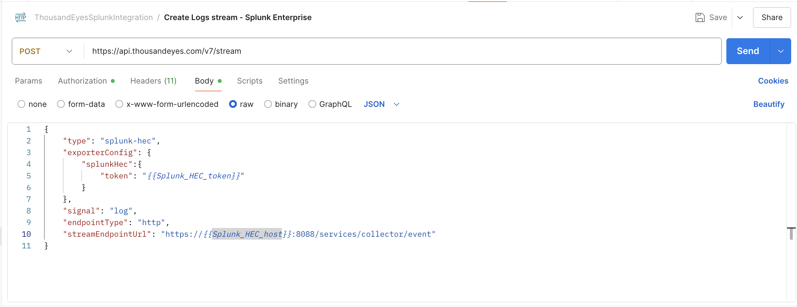
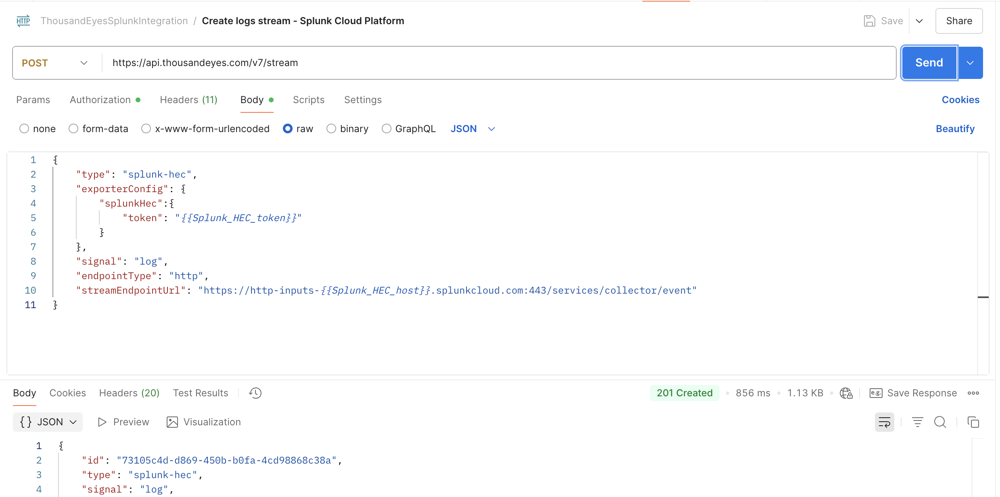
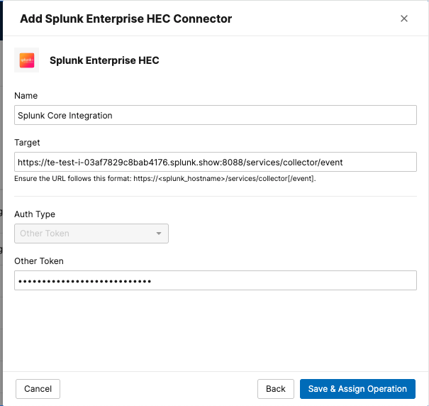
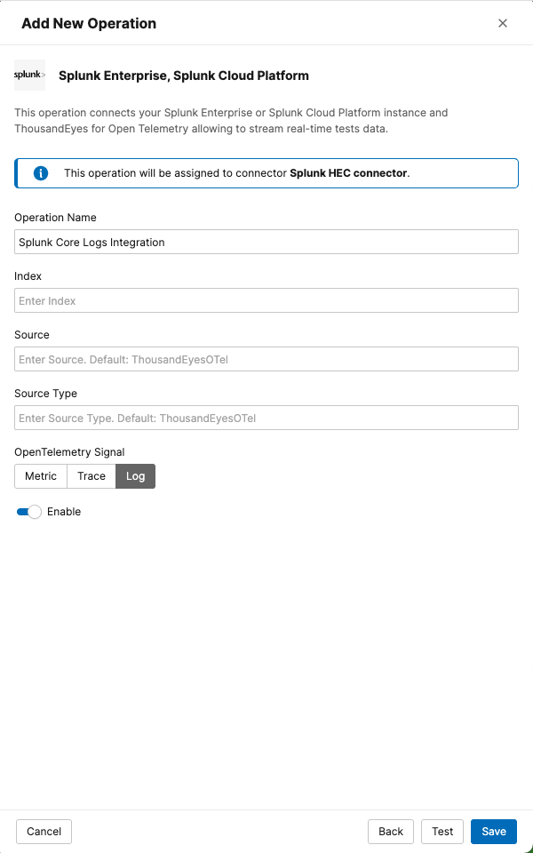

Create Logs Stream on ThousandEyes for Splunk Cloud Platform or Splunk Enterprise
Choose one of the following methods to create your stream to Splunk Cloud Platform or Splunk Enterprise:
Use the ThousandEyes API through Postman to create the stream programmatically.
Create Stream via API
- Open the request in your Postman collection:
Create logs stream - Splunk Enterprise - Click
Sendto execute the API request

Use the ThousandEyes API through Postman to create the stream programmatically.
Create Stream via API
- Open the request in your Postman collection:
Create logs stream - Splunk Cloud Platform - Click
Sendto execute the API request

API Documentation
For detailed API parameters and options, check the ThousandEyes API documentation.
Use the ThousandEyes web interface to create the integration manually using Integrations 2.0.
- Navigate to
Manage>Integrations>Integrations 2.0
Create a Connector
- Click
+ New Connectorto select the type of connector to configure- Splunk Cloud Platform:
Splunk Cloud Platform HEC - Splunk Enterprise:
Splunk Enterprise HEC
- Splunk Cloud Platform:
- Configure Connector Settings
Name: A name for your connector (e.g., "Splunk Core Integration")Target: The target URL of the integration:Splunk Cloud Platform:https://http-inputs-<host>.splunkcloud.com:443/services/collector/eventSplunk Enterprise:https://<host>:8088/services/collector/event
Token: Enter your Splunk HEC token
- Click
Save & Assign Operationto save the connector

Create an Operation
- Click
+ New Operationto open the menu for selecting the operation type - Choose
Splunk Enterprise, Splunk Cloud Platformto proceed to the configuration form - Configure Operation Settings
Operation Name: A name for your operation (e.g., "Splunk Core Logs Integration")Signal:logs
- Click
Save

Data Flow Timing
The stream will begin sending data to your Splunk instance within a few minutes of activation.